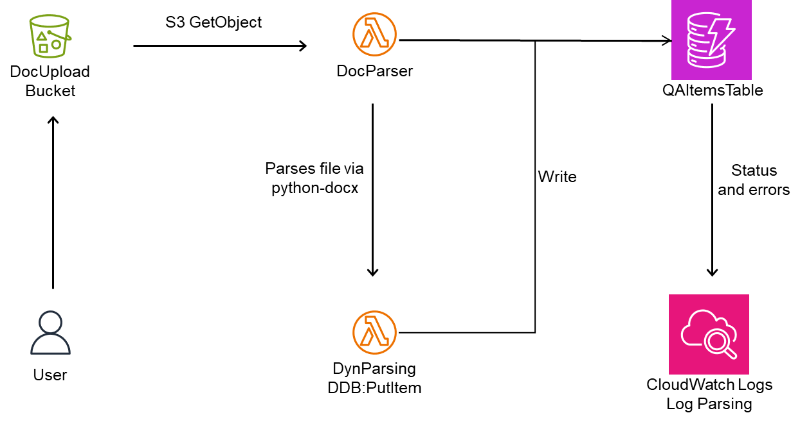

PDF Data Ingeestion

This project combines fully managed AWS services like Amazon S3, Textract, SNS, and DynamoDB with a little bit of custom serverless programming via AWS Lambda.
It seamlessly extracts structured questions and answers from raw PDF documents, automatically storing insights in a structured database, in an easily query-able form.
This foundation is just the beginning: imagine layering in generative AI that refines answers, real-time feedback loops that learn from user interactions, or automated insights that surface trends—fueling an ever-smarter system that grows alongside your next big idea.
Word Document Formatting Analysis

This next project started with a need to improve the PDF Q&A Database solution in terms of cost and flexibility.
While Amazon Textract remains extremely cost-effective even up through hundreds of thousands of pages.
There is a cost consideration, particularly for non-commercial projects. I wanted to see if I could create a solution to
automatically analyze a document uploaded to Amazon S3, extract formatted question-and-response pairs with precision,
and neatly stores them in DynamoDB. Cutting out Amazon Textract meant more work for me; however, the trade-off was worth it.
Cost and flexibility yes, and also lots of learning and appreciation for Textract’s capabilities. Invaluable. Leveraging
AWS Lambda for custom parsing logic, integrated seamlessly with fully managed AWS services, the solution requires
minimal maintenance and scales effortlessly, balancing cost-efficiency and flexibility perfectly.
This foundation sets the stage for transformative evolution—soon, machine learning and generative AI could enhance
document analysis, automatically identifying insights, trends, or opportunities hidden within content.
With this leap, creativity becomes unlimited, and innovation unstoppable.
Presentation and Udemy Course
What began as my personal AWS Cloud learning journey revealed a significant gap in cloud education: most training programs
assumed students had networking prerequisites, however, few resources actually taught these essential skills from the
perspective of a cloud administrator. Recognizing this need, I developed a comprehensive presentation that evolved into
a highly-rated Udemy course.
A Blogger's Life
What began as my personal AWS Cloud learning journey revealed a significant gap in cloud education: most training programs
assumed students had networking prerequisites, however, few resources actually taught these essential skills from the
perspective of a cloud administrator. Recognizing this need, I developed a comprehensive presentation that evolved into
a highly-rated Udemy course.